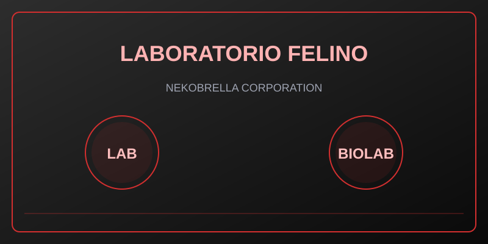

Nivel global
Alerta roja
Contención reforzada. Activar el protocolo de respuesta inmediata.
NEKOBRELLA CORPORATION
Bienvenido a NEKOBRELLA CORPORATION. Este panel es una plataforma de control para la supervisión de sujetos experimentales felinos y operaciones de contención.

Unidad: Investigación Genética y Contención
Estado: Operativo
Entorno con acceso controlado. Solo personal con credenciales válidas puede interactuar con este sistema.
Panel de monitoreo
Estado en tiempo real de los sujetos, alertas y archivos clasificados del sistema de contención.
Nivel global
Contención reforzada. Activar el protocolo de respuesta inmediata.
Sujetos activos
Monitoreo constante en el sistema de vigilancia interna.
Fugas
El equipo de contención ya se encuentra en ruta de intervención.
Reportes archivados
Incidentes clasificados almacenados en la base de datos segura.